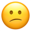

(etc.) A set of keys used to operate a typewriter, computer etc.
A component of many instruments including the piano, organ, and
harpsichord consisting of usually black and white keys that
cause different tones to be produced when struck.
A device with keys of a musical keyboard, used to control
electronic sound-producing devices which may be built into or
separate from the keyboard device.
Synonyms —
electronic keyboard
verb
Meaning
To type on a computer keyboard.
“Keyboarding is the part of this job I hate the most.”
Sourcehttps://en.wiktionary.org/wiki/keyboard

No Definitions Found
Sorry pal, we couldn't find definitions for the word you were looking
for. You can try the search again at later time or head to the web
instead.